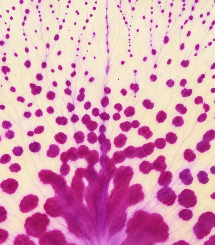
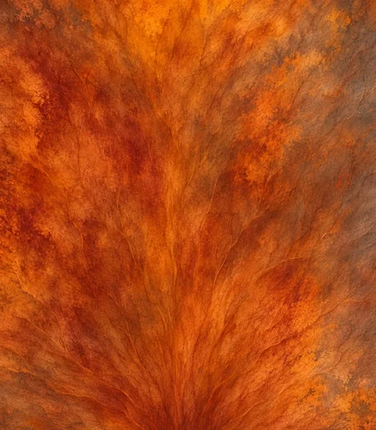
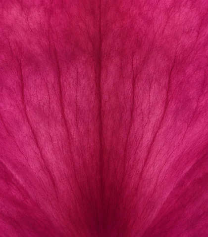
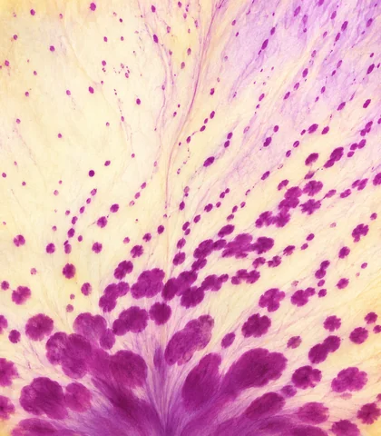
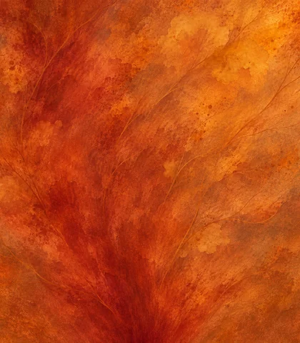
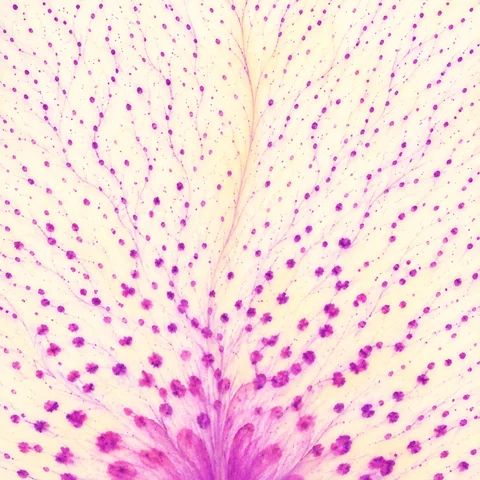
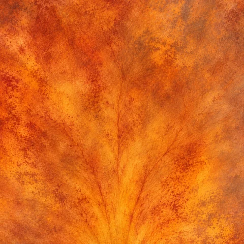
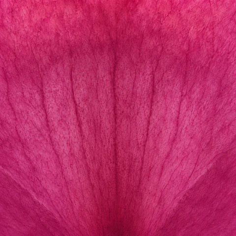

QUELEC · SUBLIMACIÓN
Artes de las flores
Cinco artes de la flor central y tres de las flores pequeñas, en JPG original para sublimación.
Flor central
Lienzo de 350 × 400 cm · 20.669 × 23.622 px · 150 ppp · sRGB









Flores pequeñas
Ver el modelo 3D y su mecanismo ↗
Lienzo de 203,2 × 203,2 cm · 12.000 × 12.000 px · 150 ppp · sRGB




